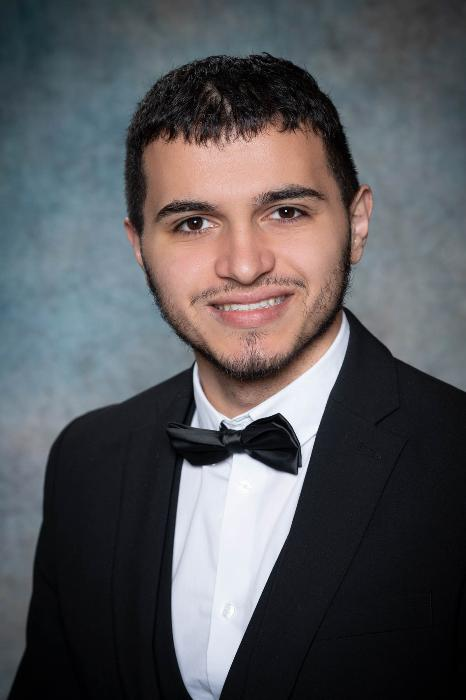

Ich bin Ogulcan Kaya, Schüler im fünften Jahrgang der Media HAK Schwaz — einer kaufmännischen Handelsakademie mit Schwerpunkt auf Kommunikation, Medieninformatik und digitalen Technologien. Seit ich das erste Mal eine Webseite im Browser inspiziert und den dahinterliegenden Code gesehen habe, war mir klar: Das ist mein Feld.
Mein Schulzweig war Medieninformatik — mit Fokus auf Adobe-Programme, digitale Mediengestaltung, Web-Entwicklung und Kommunikation. Parallel dazu habe ich selbstständig programmiert, Webprojekte gebaut und mich tief in JavaScript, PHP und Datenbankanbindungen eingearbeitet. Dort, wo Logik auf Kreativität trifft, bin ich in meinem Element.
In fünf Jahren HAK habe ich eine breite Basis aufgebaut: Mediengestaltung, Netzwerktechnik, CMS-Entwicklung mit WordPress, kaufmännisches Denken und Kommunikation. Mein Diplomarbeitsprojekt „Charity" war dabei ein besonderer Meilenstein — ein echtes Webprojekt von der Konzeption bis zur Live-Schaltung, das technisches Können mit gesellschaftlicher Relevanz verbindet.
Mein persönliches Ziel ist es, in der Web- und Softwareentwicklung zu arbeiten. Ich bin aktuell auf der Suche nach einem Praktikum oder Einstiegsjob, in dem ich diesen Weg weitergehen kann — motiviert, lernbereit und offen für neue Technologien und Herausforderungen.
